Vehicle - Reduced Load Capacity Label Compliance Info.
GROUPGENERAL INFORMATION
DATE
APRIL 2013
NUMBER
13-GI-001
MODEL(S)
ALL
SUBJECT:
LABEL REQUIREMENTS FOR VEHICLE LOADING
TO COMPLY WITH FMVSS 110
Description:
This TSB supersedes TSB 10-GI-001 and has been updated to describe the new website available on HMAService.com designed to assist dealers with proper application of the "Load Carrying Capacity Reduced" label.
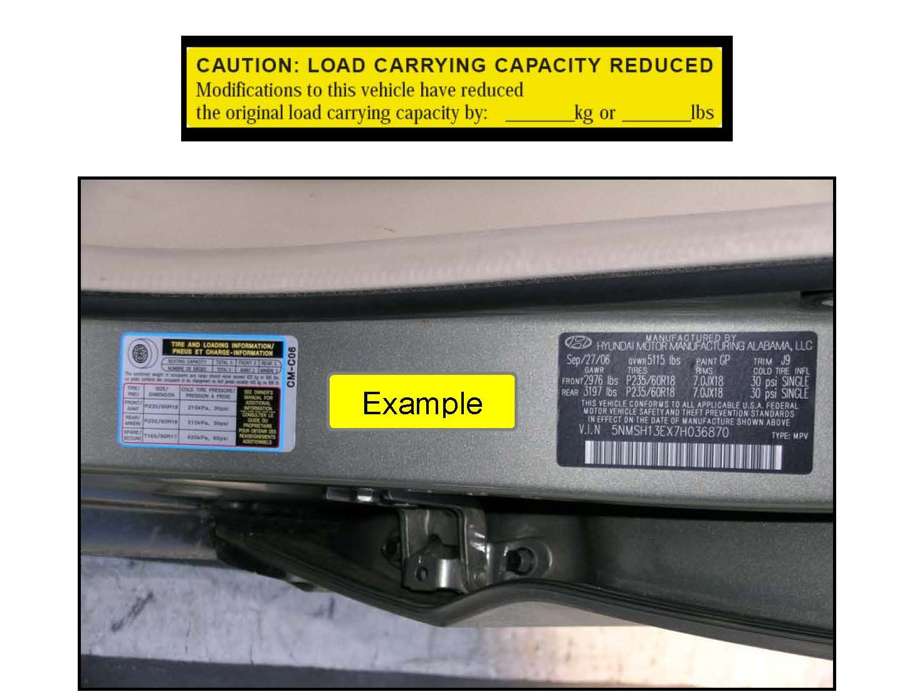
Effective June 2, 2008, Federal Motor Vehicle Safety Standard 110 (FMVSS 110) set a threshold for correcting load capacity information indicated on tire placards when vehicle weight has been increased before retail sale. This limit is the lesser of 1.5% of the Gross Vehicle Weight Rating or 45.4kg (100 pounds). If the total added weight exceeds the lesser of the limit, a label (See Figure 1) must be added to the driver-side B-pillar within 25mm (1 inch) of the original tire placard.
Applicable Vehicles:
All vehicles retailed beginning on June 2, 2008 that meets the additional weight criteria above.
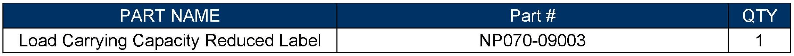
Parts Information:
Warranty Information:
This procedure is not a warranty repair.
Service Procedure:
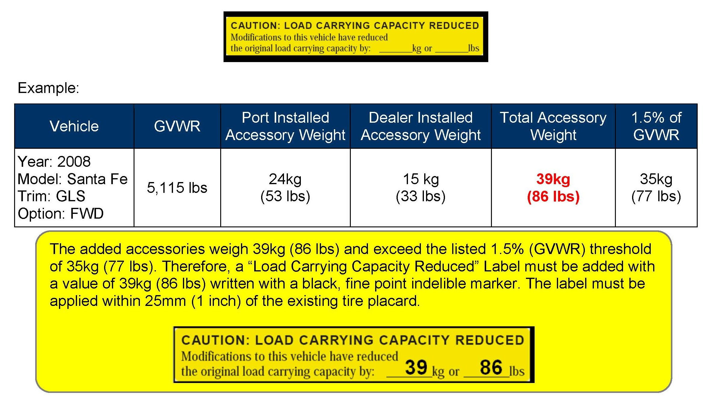
All Dealers must determine if the weight they have added in the form of a single or multiple option(s) or accessory(s), when added to the weight of any Port installed option(s) or accessory(s), exceeds the lesser of 1.5% of GVWR or 45.4kg (100 lbs). All Port installed or Dealer installed options must be included in the weight analysis. If the additional weight does exceed the lesser of the indicated thresholds, a "Load Carrying Capacity Reduced" Label must be installed. A black, fine point, indelible marker must be used to write by hand onto the label the reduced carrying capacity in kilograms and pounds, which is the total weight of all the added option(s) or accessory(s).
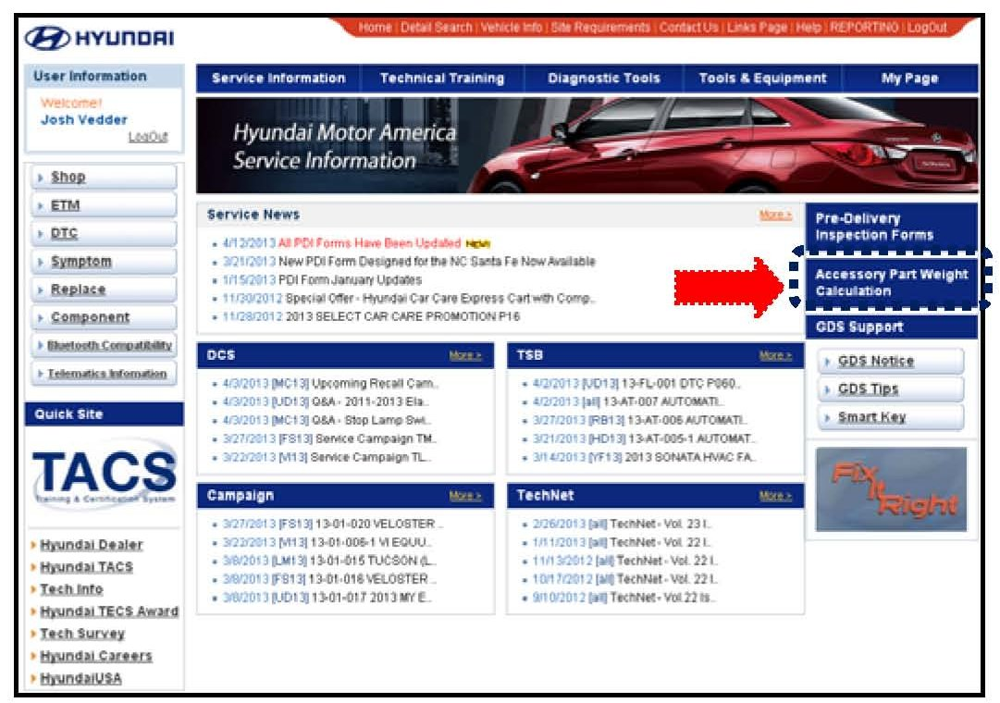
1. To determine if a "Load Carrying Capacity Reduced" label is required go to the following website: HyundaiTechInfo.com.
On the right side of the screen you will find a link to the "Accessory Part Weight Calculation" worksheet.
Selecting this link will initiate a download of the "Part Accessory Weight Calculation" Excel worksheet.
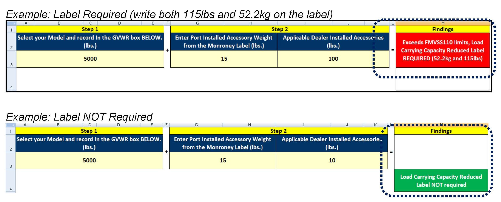
2. The downloaded sheet has an automated calculation that will determine if the vehicle requires the "Load Carrying Capacity Reduced" Label. It will also indicate the weight to be recorded on the label.
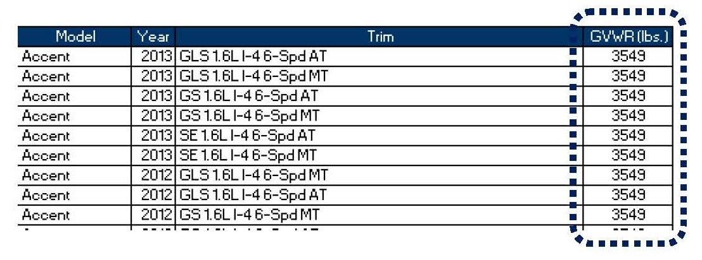
3. Step 1: Enter GVWR
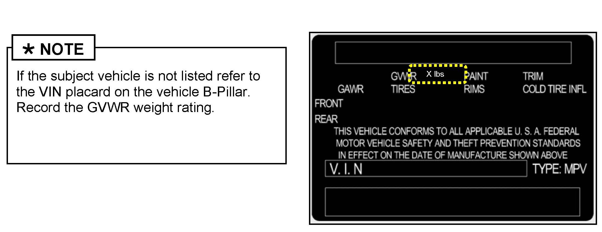
From the provided table select subject vehicle (Model, Year, Trim). Enter the weight below the cell labeled "Select your Model and record in the GVWR box BELOW (lbs.)".
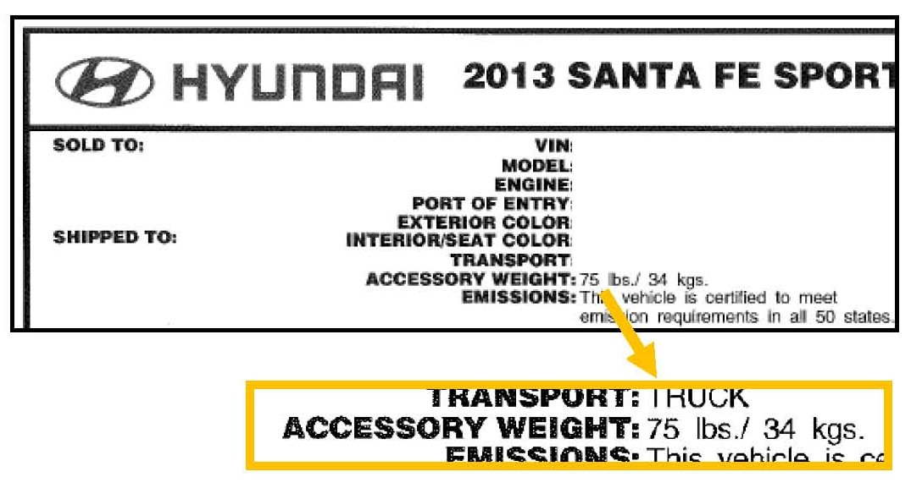
4. Step 2: Entering Accessory Weights
^ Enter Port Installed Accessory Weight from the Monroney Label
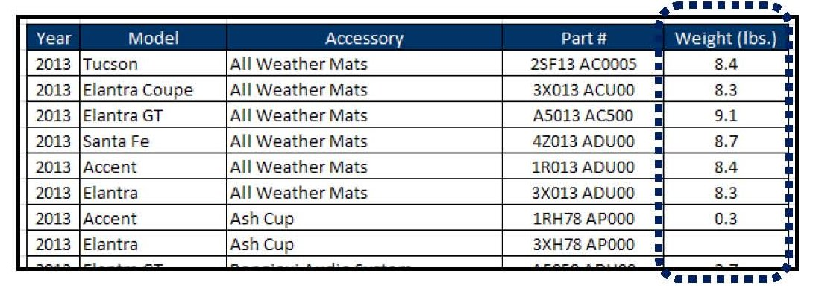
^ From the table provided add all applicable Dealer Installed Accessories.
^ Enter the weight below the cell labeled "Applicable Dealer Installed Accessories (lbs.)".
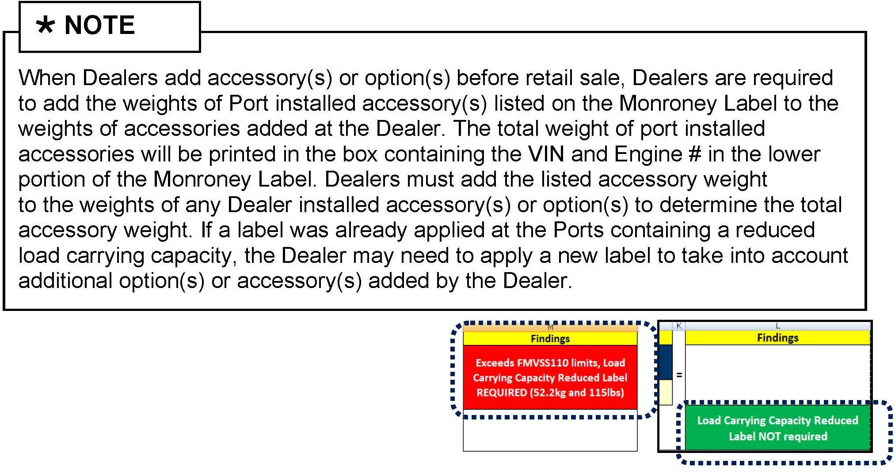
5. The worksheet will indicate if a "Load Carrying Capacity Reduced" label is required. If the label is required the worksheet will indicate the weight that must be written on the label.
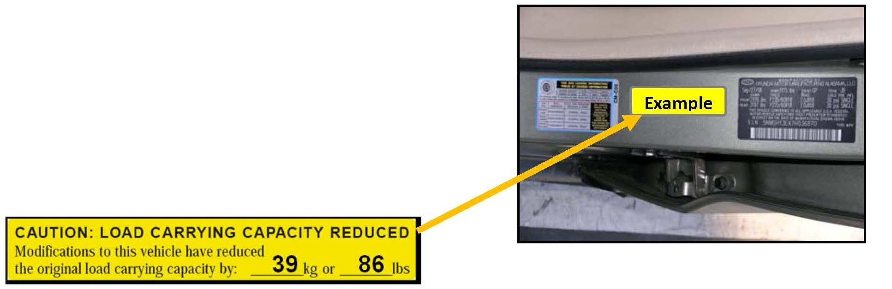
6. Label must be added with the indicated weight in lbs. written with a black, fine point indelible marker. The label must be applied within 25mm (1 inch) of the existing tire placard.